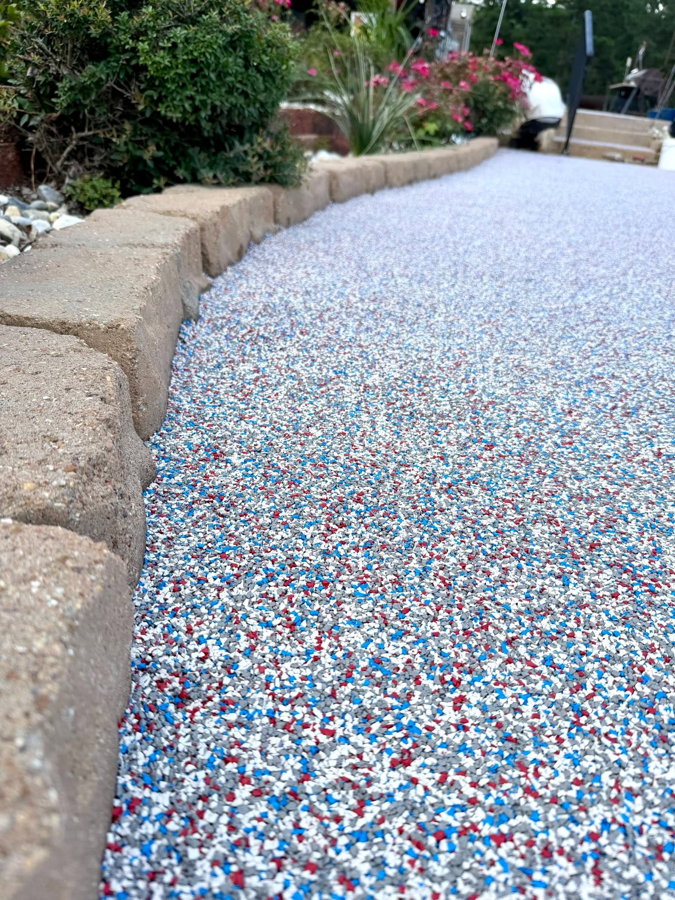

Match the fixed materials
Brick coping, stone, siding, trim, fencing, and existing concrete should guide the blend.
Color direction
ProCoat helps narrow blends around water color, brick, stone, house paint, landscape beds, garage use, and how the surface will look in harsh East Texas sun.

Popular directions
How to choose
Brick coping, stone, siding, trim, fencing, and existing concrete should guide the blend.
Light colors generally read cooler and brighter around pools and docks in direct sun.
Garages, shops, and commercial spaces can carry stronger graphite or flake contrast.
Need samples?